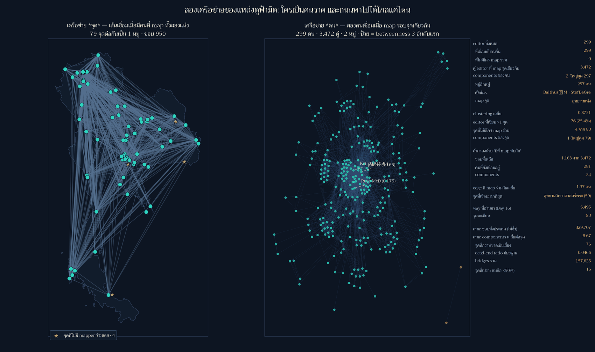
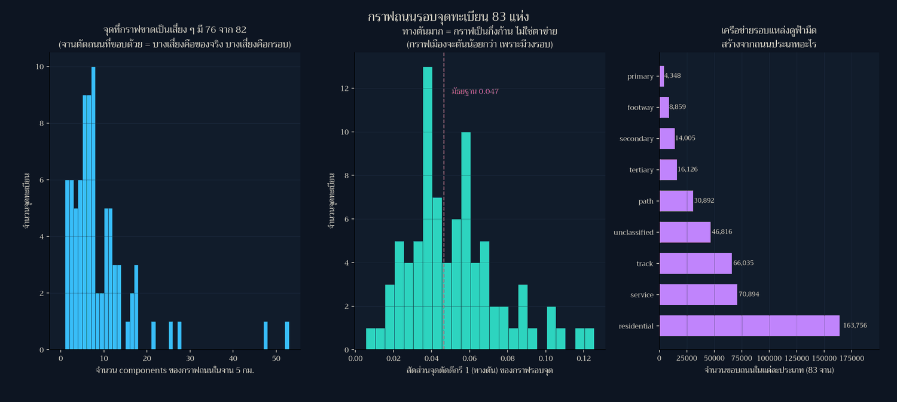
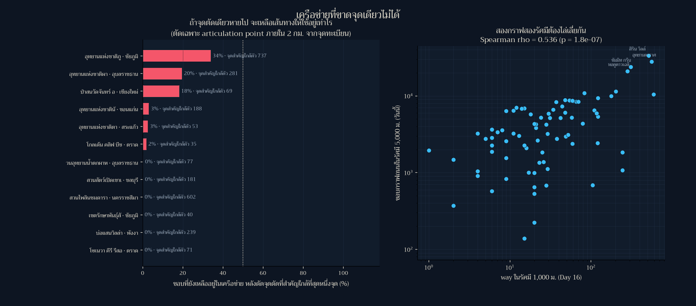
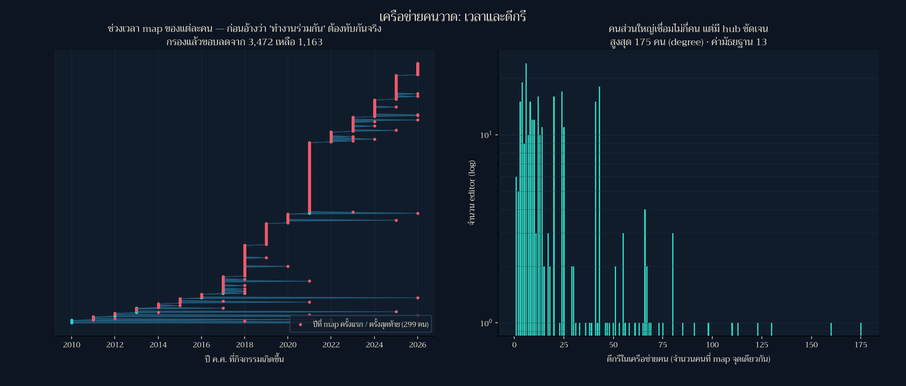

Day 24 · Network — สองเครือข่ายของแหล่งดูฟ้ามืดไทย: คนวาด 299 คนเป็นกราฟเดียวกัน (แต่ 2 ใน 3 ของเส้นเชื่อมหายไปกับเวลา) และ 16 จุดที่ถนนสายเดียวพาออกไปไม่ได้

โจทย์ทางการวันนี้คือ “Route network, transit network, human network or something completely different.” (หัวข้อ Network — ดึงข้อความมาจากหน้า 30daymapchallenge.com อ่านสด 20:18 น. ของวันที่ 24 พ.ย.)
ซีรีส์นี้พูดเรื่อง “จุด” มา 23 วัน — วันนี้ผมถามว่า แล้วจุดเหล่านี้เชื่อมกันเป็นอะไร และคำตอบมีสองชั้นที่ต่างกันโดยสิ้นเชิง:
- เครือข่ายคน — ใครคือคนที่ map รอบแหล่งดูฟ้ามืดไทย และคนเหล่านั้นรู้จักกันทางอ้อมไหม
- เครือข่ายถนน — ถนนที่พาไปหาแหล่งดูฟ้ามืดเป็น ตาข่าย หรือเป็น กิ่งก้านที่ขาดที่จุดเดียว
๐. ข้อมูลสองชุดที่ไม่ต้องยิง API เลย
ชั้นที่ 1 มาจาก แคชของ Day 16 ซึ่งเก็บไว้ตั้งแต่วันที่ 17 พ.ย.: object 5,495 way พร้อม user และ timestamp ในรัศมี 1,000 ม. รอบ 83 จุดทะเบียน → 299 editor (ตัวเลขตรงกับที่ Day 16 รายงาน: 5,495 way · 299 คน · 76 คนที่เขียนเกิน 1 จุด = 25.42%)
ชั้นที่ 2 มาจาก Geofabrik Thailand extract ไฟล์เดียวกับ Day 21–23 (md5 db3958a0…) สแกน way ที่มีแท็ก highway ทั้งหมด 2,944,183 way จาก 5,303,991 way ในไฟล์ (ตัวเลขทั้งสองอยู่ใน day24_stats.json ภายใต้ pbf_highway_ways / pbf_ways_in_file) แล้วเก็บเฉพาะท่อนที่ปลายทั้งสองอยู่ในจาน 5,000 ม. ของจุดเดียวกัน → node 413,758 slot · ขอบ 430,464 (ไม่ซ้ำกันจริง 329,707) · ประเภททาง 25 ค่า
เหตุผลที่เก็บเฉพาะขอบที่อยู่ในจาน: ถ้าปล่อย way ยาว ๆ จากจังหวัดข้างเคียงเข้ามา กราฟจะ “เชื่อม” เพราะเส้นผ่าน ไม่ใช่เพราะถนนของพื้นที่นั้นจริง
๑. เครือข่ายคน: เป็นกราฟเดียวกันทั้งดุ้น

สร้างกราฟสองแบบจากข้อมูล bipartite เดิม
| กราฟ | โหนด | ขอบ | components | ค่าอื่น |
|---|---|---|---|---|
| editor↔︎editor (map รอบจุดเดียวกัน) | 299 | 3,472 | 2 (297 + 2) | clustering เฉลี่ย 0.8731 |
| editor↔︎editor (กรองว่าช่วงปีทับกัน) | 281 ที่มีขอบ | 1,163 | 24 (ใหญ่สุด 269) | เหลือขอบแค่ 33.5% |
| site↔︎site (มี editor ร่วม) | 79 | 950 | 1 | เฉลี่ย 1.37 คน/คู่จุด |
สามเรื่องที่ตารางนี้บอก
หนึ่ง — ชุมชนนี้เชื่อมถึงกันหมด ไม่มี editor ที่โดดเดี่ยว (0 isolated) และ 297 จาก 299 คน อยู่ใน component เดียว หมู่อีกหมู่มี 2 คน คือ Balthus★MC กับ StefDeGreef ซึ่ง map อยู่จุดเดียวทั้งประเทศ: อุทยานแห่งชาติเขาพระวิหาร แปลว่าในเชิงคนที่map แล้ว แหล่งดูฟ้ามืดไทยคือเครือข่ายเดียว ไม่ใช่กลุ่มเล็กกลุ่มน้อย
สอง — แต่ “ร่วมกัน” ส่วนใหญ่ไม่ได้เกิดขึ้นพร้อมกัน พอกรองว่าช่วงปีที่สองคน map จริงต้องทับกัน (first–last year overlap) ขอบหายไปถึง 2 ใน 3 และกราฟแตกจาก 2 components เป็น 24 — คนที่ map จุดเดียวกันส่วนมากคือ มาต่อกันคนละปี ไม่ใช่มาช่วยกัน ซึ่งเป็นคำอธิบายที่ต่างออกไปมาก (ผมใส่ไว้เป็น limitation ด้วย: year range เป็นค่าประมาณบนของการ “ทำงานร่วมกัน”)
สาม — มีคนที่เป็น ” สะพาน ” ชัด เรียงด้วย betweenness: Russ McD 0.1747 (23 จุด), julcnx 0.1683 (26 จุด), Kri_ttt 0.0853 (10 จุด), AlaskaDave 0.0768 (18 จุด) และเมื่อมองฝั่งจุด จุดที่เชื่อมกับจุดอื่นมากที่สุดคือ อุทยานวิทยาศาสตร์พระจอมเกล้า ณ หว้ากอ (59) กับ อุทยานดาราศาสตร์สิรินธร (59) ตามด้วย สิริน วิลล์ แม่ริม (57) — เป็นจุดที่คนซึ่ง map ที่อื่นด้วย แวะมา map ด้วย (มักเป็นหอดูดาว/สถานที่ราชการที่ mapper สายดาราศาสตร์รู้จัก)
และ 4 จุดที่ ไม่มีใคร map ร่วมกับจุดอื่นเลย: ทุ่งโนนป่าก่อ (ภูสีฐาน) · เขาพระวิหาร · อุทยานแห่งชาติเขาใหญ่ · หอดูดาวเฉลิมพระเกียรติฯ สงขลา ในเชิงบริหารข้อมูล นี่คือจุดที่ bus factor = 1 — ถ้าคนที่ map ไว้หายไป จะไม่มีใครในเครือข่ายที่รู้จักสถานที่นี้เหลืออยู่
๒. เครือข่ายถนน: ตาข่าย หรือ กิ่งก้าน

กราฟถนนรอบแต่ละจุด (node = จุดตัดของ OSM, edge = ท่อนถนน) วัด 4 อย่าง: จำนวน components, สัดส่วนขอบที่อยู่ใน component ใหญ่สุด, dead-end ratio (สัดส่วน node ดีกรี 1 = ทางตัน), และจำนวน bridges (ขอบที่ตัดแล้วกราฟขาด) กับ articulation points (จุดที่ลบแล้วกราฟขาด)
- 82 จาก 83 จุดมีกราฟถนนใน 5 กม. จุดที่ไม่มีคือ อุทยานแห่งชาติเขาใหญ่ — ซึ่งตรงกับ Day 21 ที่ว่ารอบเขามี object น้อยมาก (คราวนั้นวัดใน 2 กม.) และจุดที่ไกลถนนที่สุดคือ ทุ่งโนนป่าก่อ (ภูสีฐาน) ที่ 3,429.7 ม.
- components เฉลี่ย 8.67 (มัธยฐาน 6.5, สูงสุด 53) — 76 จาก 82 จุด “ขาดเป็นเสี่ยง” แต่อย่าเพิ่งตกใจ: ขอบส่วนใหญ่อยู่ใน component ใหญ่ (largest_edge_share มัธยฐาน ~0.99) เสี่ยงเล็ก ๆ เหล่านั้นคือทางเท้า/บันได/ทางเดินในสวนที่ map ไว้ไม่ต่อกับถนน จุดที่เสี่ยงใหญ่จริงคือ อุทยานแห่งชาติเขาพระวิหาร ที่ largest_edge_share = 0.4422 (ครึ่งหนึ่งของถนนในรัศมี 5 กม. เข้าถึงจากจุดทะเบียนไม่ได้)
- dead-end ratio มัธยฐาน 4.66% (ต่ำสุด 0.54% · สูงสุด 12.54% ที่ หอดูดาวเฉลิมพระเกียรติฯ ฉะเชิงเทรา) และ bridges รวม 157,625 เส้น เฉพาะจุดที่มีมากสุด (สิริน วิลล์ แม่ริม) มี bridge เดี่ยว ๆ ถึง 10,207 เส้น = ถนนที่ถ้าปิดหนึ่งท่อน มีจุดที่เข้าถึงไม่ได้ทันที
- ถนนที่โผล่มาเป็นประเภทหลักของกราฟรอบจุด: residential 41 จุด · track 23 จุด · secondary 5 · tertiary 4 · path 4 · unclassified 3 — สายดูดาวจำนวนไม่ใช่น้อย ลงท้ายด้วยทางลูกรัง (สอดคล้องกับ Day 23 ที่ว่าของกินอยู่ไกลออกไป 11 กม.)
๓. จุดที่ “จุดตัดเดียว” ตัดขาดทั้งเส้นทาง

ทดสอบต่อ: ลบ articulation point ที่อยู่ในระยะ 2 กม. จากจุดทะเบียนทีละจุด (สูงสุด 40 จุด) แล้วดูว่าขอบที่ยังเดินถึงจากจุดทะเบียนเหลือกี่เปอร์เซ็นต์ของเดิม — ผลคือตัวเลขที่ใช้วางแผนได้จริง
- 16 จุด เหลือเครือข่ายไม่ถึง 50% เมื่อจุดตัดสำคัญหายไปหนึ่งจุด
- 3 จุดเหลือ 0% — คือตัดจุดเดียวแล้ว ออกไม่ได้เลย จากมุมมองของกราฟ: โซเนวา คีรี รีสอร์ท (ตราด) · บ่อแสนวิลล่า (พังงา) · เขตรักษาพันธุ์สัตว์ป่าภูเขียว (ชัยภูมิ)
- จุดที่ “ไม่มีจุดตัดสำคัญใกล้ตัวเลย” มี 1 จุด — แปลว่าทางเข้าถึงเป็นตาข่ายจริง ไม่ใช่กิ่งเดี่ยว
ข้อจำกัดของตัวเลขนี้ต้องพูดให้หมด: มันคือ ความเชื่อมโยงเชิงทอพอโลยีของกราฟที่ตัดขอบไว้ ที่รัศมี 5 กม. ไม่ใช่การจำลองการจราจร ไม่มี one-way, ไม่มีการปิดถนนจริง, และ components ที่มากกว่า 1 บางส่วนเกิดจากกรอบจานตัดถนนที่ยื่นเข้ามา — ผมเก็บคอลัมน์ nodes, edges, components ไว้ใน csv เพื่อให้ตรวจย้อนได้ว่าเสี่ยงจริงหรือเสี่ยงเพราะกรอบ
๔. ตรวจกลับสองวันก่อนหน้า

| การตรวจ | ผล |
|---|---|
| way · editor · คนที่เขียนเกิน 1 จุด | 5,495 · 299 · 76 (25.42%) ตรงกับที่ Day 16 รายงาน |
| ระยะไปหาถนน: Day 21 (ถึง ขอบ ใน 2 กม.) vs Day 24 (ถึง node ใน 5 กม.) | rho 0.915 (p 6.0e-33) · ต่างกันมัธยฐาน 0.8 ม. · สูงสุด 87.5 ม. |
| จำนวนขอบถนน 5 กม. ↔︎ จำนวน way ที่คนเขียน 1 กม. (Day 16) | rho 0.536 (p 1.8e-07) |
| dead-end ratio ↔︎ ประชากรเมืองในรัศมี 30 กม. (Day 9) | rho +0.358 (p 0.00097) |
| จำนวน components ↔︎ ประชากรเมือง | rho +0.303 (p 0.0057) |
สองบรรทัดสุดท้ายน่าสนใจเพราะเครื่องหมาย: เมืองใหญ่กว่า = ทางตันมากกว่าและกราฟเสี่ยงกว่า ซึ่งสมเหตุสมผล — หมู่บ้านจัดสรร/ซอยตัน/ทางเดินในโครงการถูก map ละเอียดกว่า ส่วนพื้นที่เกษตรรอบนอกเป็นตาข่ายเส้นตรงยาว ๆ
วิธีทำแบบย่อ
- โหลดแคช Day 16 (way + user + timestamp ของ 83 จุด) → สร้าง 3 กราฟ: bipartite, editor↔︎editor (ร่วมจุด), site↔︎site (ร่วมคน)
- กราฟ “คน” แบบที่สองกรองเพิ่มด้วยช่วงปีที่ map ทับกัน (first–last year) เพื่อแยก “ร่วมงาน” ออกจาก “มาทีหลัง”
- สแกน
highwayจาก PBF ด้วยlocations=Trueของ pyosmium (libosmium สร้าง index ของ node ให้เอง → สแกนรอบเดียว) เก็บเฉพาะขอบที่ปลายทั้งสองอยู่ในจาน 5,000 ม. เดียวกัน - ต่อจุด: สร้างกราฟ, นับ components, dead-end,
nx.bridges,nx.articulation_pointsแล้วลบจุดทีละตัวเพื่อหาworst_cut_keep - ตรวจกลับกับ Day 21 (ระยะไปถนน) และ Day 16 (ปริมาณ way ที่คนเขียน)
- assert ที่ใส่ไว้: way ต้องได้ 5,495 · editor 299 · ผลรวม component ต้องเท่าจำนวน node · จุดรวม 83 ต้อง = ที่เชื่อม + ที่ isolated · กรองเวลาต้องเหลือขอบน้อยลง · node-slot ต้องตรงกับที่สแกน ·
worst_cut_keepอยู่ในช่วง 0–1
ข้อจำกัดที่ต้องบอกตรง ๆ
- กราฟคนสร้างจากรัศมี 1,000 ม. รอบจุดทะเบียน (ของเดิมจาก Day 16) ไม่ได้ใช้ขอบเขต พื้นที่ทำงานจริงของ mapper แต่ละคน → สองคนที่ map ติดกันมากอาจไม่ถูกนับว่าร่วมจุด และคนเดียวกันที่ map คนละด้านของอำเภออาจถูกนับว่า “รู้จักกัน”
- จาน 5,000 ม. ตัดถนนที่ยื่นเข้ามา →
components > 1บางส่วนคือกรอบของการศึกษา ไม่ใช่ความขาดจริง ผมจึงรายงานlargest_edge_shareควบคู่เสมอ - กราฟถนนเป็น 2D จาก OSM ไม่มี one-way, weight, ระดับถนน หรือเวลาปิด-เปิด
worst_cut_keepจึงตอบว่า “โครงสร้างขาดไหม” ไม่ใช่ “รถไปไม่ได้จริงไหม” - ทดสอบจุดตัดเพียง 40 จุดใกล้สุดต่อจุดทะเบียน (
MAX_CUT_TRIALS) เพื่อคุมเวลา - ระหว่าง 17 พ.ย. (แคช Day 16) กับ 21 พ.ย. (extract) มีคน map เพิ่ม — สองชั้นข้อมูล ไม่ได้อยู่เวลาเดียวกันเป๊ะ
- ตัวเลขระหว่างประเทศ (เช่นจำนวน way 2.94 ล้าน) เป็นของ ไฟล์ extract ไม่ใช่ของทั้งโลก
ไฟล์ประกอบ
- day24_networks.png — แผนที่ site network (เส้น = มีคน map ร่วม) + graph ของ editor + สถิติหลัก
- day24_roads.png — การกระจายของ components, dead-end ratio และ ประเภทถนนที่สร้างกราฟรอบ 83 จุด
- day24_fragile.png — 12 จุดที่เปราะที่สุด (เหลือเครือข่ายกี่ % เมื่อ จุดตัดหายไปหนึ่งจุด) + ความสอดคล้องกับปริมาณ map ของ Day 16
- day24_people.png — ช่วงเวลา map ของแต่ละคน (ก่อน-หลังกรองเวลา) และ การกระจายดีกรีของเครือข่ายคน
- day24_roads.csv — ต่อจุด: nodes, edges, components, dead-end, bridges, articulations, ระยะไปถนน, worst_cut_keep, ประเภทถนนหลัก
- day24_editors.csv — ต่อ editor: ดีกรี, จำนวนจุดที่ map, ปีแรก–ปีสุดท้าย, betweenness, component, ขอบที่ยังอยู่หลังกรองเวลา
- day24_sites.csv — ต่อจุดทะเบียน: จำนวน editor, ดีกรีใน site network, component, จำนวน node/edge ของกราฟถนน
- day24_site_edges.csv — คู่จุดที่เชื่อมกัน + จำนวนคน map ร่วม
- day24_stats.json — นิยามทั้งหมด +
cross_check_day16+cross_check_day21+ ตัวเลขทุกคู่ที่ทดสอบ


โค้ด: tools/collect_day24_roads.py (สแกน PBF → npz) และ tools/day24_network.py (สร้างกราฟ + วาด + referee) — โน้ตบุ๊กมี Colab bootstrap แบบเดียวกับ Day 22–23 (DAY24_FORCE_COLAB=1 ใช้ทดสอบเส้นทาง Colab บนเครื่องตัวเอง)
บทเรียน
- “เครือข่ายเดียวกัน” กับ “ทำงานร่วมกัน” ไม่ใช่คำเดียวกัน — 297/299 คนเชื่อมถึงกันจริง แต่พอกำหนดว่าช่วงปีของสองคนต้องทับกันจริง ขอบเหลือ 33.5% และกราฟแตกเป็น 24 หมู่ งานเชิง community ที่อ่านจาก co-occurrence อย่างเดียวจะเหมาเกินไปเสมอ
- กราฟทำให้เห็นจุดที่ตารางมองไม่เห็น: เขาใหญ่ไม่ใช่แค่ “ไม่มีถนนใน 2 กม.” (Day 21) แต่ ไม่มี node ถนนใน 5 กม. และ ไม่มีใคร map ร่วมกับจุดอื่นเลย — สามวันสามกราฟชี้ไปที่จุดเดียวกันว่าเป็นขอบของข้อมูล
- ความเสี่ยงของการเข้าถึงมักอยู่ที่จุดเดียว — 3 จุดที่ตัดจุดตัดหนึ่งแล้วออกไม่ได้ คือข้อมูลที่เอาไปใช้จริงได้ (ควรสำรองเส้นทางไว้/แจ้งผู้ไปจริง) มากกว่าค่าเฉลี่ยใด ๆ
- อย่าเชื่อ components ที่มากกว่า 1 โดยไม่ดูกรอบ — ผมจึงเก็บ
largest_edge_shareไว้ทุกแถว เพราะ 76 จุดที่ “ขาดเป็นเสี่ยง” แทบทั้งหมด เป็นทางเดินในสวน ไม่ใช่ถนนที่เข้าไม่ถึง - ตรวจกลับวันเก่าคือวิธีที่ถูกที่สุด — rho 0.915 กับส่วนต่างมัธยฐาน 0.8 ม. ระหว่างสองวิธีวัด (ขอบ vs node) ทำให้เชื่อได้ว่าวันนี้เราไม่ได้เปลี่ยนคำตอบ แค่เปลี่ยนคำถาม